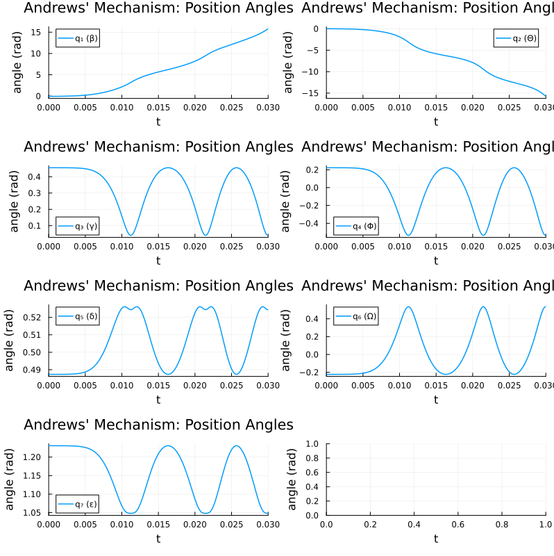
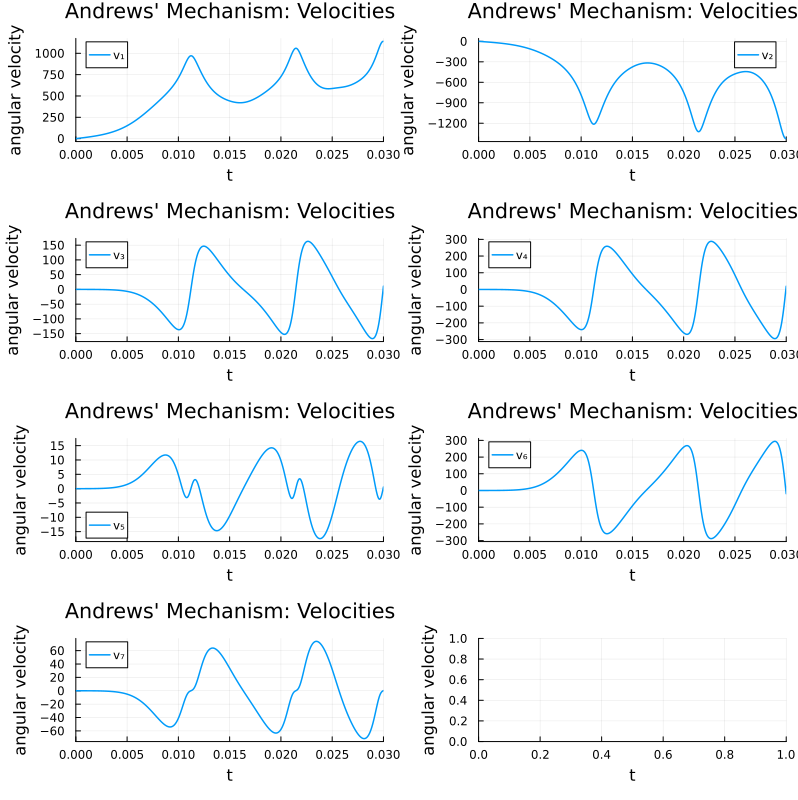
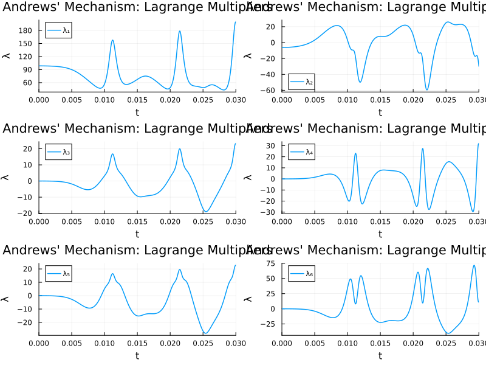
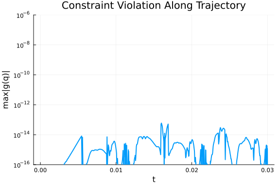
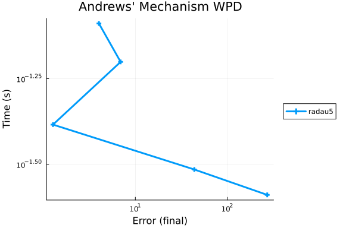

Andrews' Squeezing Mechanism DAE Work-Precision Diagrams
This is a benchmark of Andrews' squeezing mechanism, a classic index-3 DAE from the IVP Test Set (andrews.f). The system models the motion of 7 rigid bodies connected by joints without friction.
Mathematical form: $K \frac{dy}{dt} = \phi(y)$ where $y = (q, \dot{q}, \ddot{q}, \lambda) \in \mathbb{R}^{27}$ consists of 7 position coordinates, 7 velocities, 7 acceleration-like variables, and 6 Lagrange multipliers.
The underlying constrained mechanical system is:
\[M(q)\ddot{q} = f(q, \dot{q}) - G^T(q)\lambda, \quad 0 = g(q)\]
We benchmark three formulations of this problem:
- Mass-Matrix ODE Form: $K \cdot dy/dt = \phi(y)$ with $K = \textrm{diag}(I_{14}, 0_{13})$, solved with ODE solvers that handle singular mass matrices.
- DAE Residual Form: $F(\dot{y}, y, t) = K \cdot \dot{y} - \phi(y) = 0$, solved with dedicated DAE solvers (IDA from Sundials).
- MTK Index-Reduced ODE: The full index-3 system defined symbolically with position-level constraints, automatically index-reduced by
structural_simplify.
Characteristics:
- 14 differential equations + 13 algebraic equations = 27 total
- Index-3 DAE (position-level constraints)
- Time interval: $t \in [0, 0.03]$
- 7×7 configuration-dependent mass matrix $M(q)$
- 6 holonomic constraints $g(q) = 0$
- The mechanism rotates dramatically: $\beta$ goes from $-0.062$ to $+15.8$ rad
This problem has a special structure exploited by the Fortran RADAU5 code: $y_i' = y_{i+7}$ for $i = 1,\ldots,14$ (positions track velocities, velocities track accelerations). The M1/M2 parameters tell RADAU5 about this structure so it only needs to solve a 13×13 (not 27×27) nonlinear system at each step.
Reference: Giles (1978), Manning (1981); Fortran source from http://www.dm.uniba.it/~testset/
using OrdinaryDiffEq, Sundials, DiffEqDevTools, ModelingToolkit, Plots
using OrdinaryDiffEqBDF
using OrdinaryDiffEqRosenbrock
using ODEInterfaceDiffEq, LinearAlgebra
using ModelingToolkit: t_nounits as t, D_nounits as DParameters
Physical parameters of the 7-body mechanism (from andrews.f):
# Body masses
const am_m1 = 0.04325; const am_m2 = 0.00365; const am_m3 = 0.02373
const am_m4 = 0.00706; const am_m5 = 0.07050; const am_m6 = 0.00706
const am_m7 = 0.05498
# Fixed pivot coordinates
const am_xa = -0.06934; const am_ya = -0.00227
const am_xb = -0.03635; const am_yb = 0.03273
const am_xc = 0.014; const am_yc = 0.072
# Spring constant
const am_c0 = 4530.0
# Moments of inertia
const am_i1 = 2.194e-6; const am_i2 = 4.410e-7; const am_i3 = 5.255e-6
const am_i4 = 5.667e-7; const am_i5 = 1.169e-5; const am_i6 = 5.667e-7
const am_i7 = 1.912e-5
# Link lengths and geometry (d, e, u renamed to avoid Julia conflicts)
const am_d = 28e-3; const am_da = 0.0115
const am_e = 0.02; const am_ea = 0.01421
const am_rr = 7e-3; const am_ra = 9.2e-4; const am_l0 = 0.07785
const am_ss = 35e-3; const am_sa = 0.01874; const am_sb = 0.01043
const am_sc = 18e-3; const am_sd = 0.02
const am_ta = 0.02308; const am_tb = 9.16e-3
const am_u = 0.04; const am_ua = 0.01228; const am_ub = 4.49e-3
const am_zf = 0.02; const am_zt = 0.04; const am_fa = 0.01421
const am_mom = 33e-30.033Initial Conditions
Consistent initial values from andrews.f. Positions $q_0$ satisfy the constraints $g(q_0) = 0$, with zero initial velocities and consistent initial accelerations and multipliers.
y0 = zeros(27)
# Positions q (angles of 7 rigid bodies: β, Θ, γ, Φ, δ, Ω, ε)
y0[1] = -0.0617138900142764496358948458001
y0[2] = 0.0
y0[3] = 0.455279819163070380255912382449
y0[4] = 0.222668390165885884674473185609
y0[5] = 0.487364979543842550225598953530
y0[6] = -0.222668390165885884674473185609
y0[7] = 1.23054744454982119249735015568
# Velocities dq/dt (all zero)
# y0[8:14] = 0
# Accelerations (algebraic, from M*a = f - G^T*λ at t=0)
y0[15] = 14222.4439199541138705911625887
y0[16] = -10666.8329399655854029433719415
# y0[17:21] = 0
# Lagrange multipliers
y0[22] = 98.5668703962410896057654982170
y0[23] = -6.12268834425566265503114393122
# y0[24:27] = 0
println("Initial positions q₀ = ", y0[1:7])
println("Initial multipliers λ₀ = ", y0[22:27])Initial positions q₀ = [-0.06171389001427645, 0.0, 0.45527981916307037, 0.2
2266839016588588, 0.48736497954384256, -0.22266839016588588, 1.230547444549
8212]
Initial multipliers λ₀ = [98.56687039624109, -6.122688344255662, 0.0, 0.0,
0.0, 0.0]Reference Solution at t = 0.03
Computed by PSIDE on Cray C90 with double precision (from andrews.f solut):
y_ref = zeros(27)
y_ref[1] = 0.1581077119629904e+2
y_ref[2] = -0.1575637105984298e+2
y_ref[3] = 0.4082224013073101e-1
y_ref[4] = -0.5347301163226948e+0
y_ref[5] = 0.5244099658805304e+0
y_ref[6] = 0.5347301163226948e+0
y_ref[7] = 0.1048080741042263e+1
y_ref[8] = 0.1139920302151208e+4
y_ref[9] = -0.1424379294994111e+4
y_ref[10] = 0.1103291221937134e+2
y_ref[11] = 0.1929337464421385e+2
y_ref[12] = 0.5735699284790808e+0
y_ref[13] = -0.1929337464421385e+2
y_ref[14] = 0.3231791658026955e+0
y_ref[15] = -0.2463176316945196e+5
y_ref[16] = 0.5185037701610329e+5
y_ref[17] = 0.3241025686413781e+6
y_ref[18] = 0.5667493645176213e+6
y_ref[19] = 0.1674362929479361e+5
y_ref[20] = -0.5667493645176222e+6
y_ref[21] = 0.9826520791458422e+4
y_ref[22] = 0.1991753333731910e+3
y_ref[23] = -0.2975531228015052e+2
y_ref[24] = 0.2306654119098399e+2
y_ref[25] = 0.3145271365475927e+2
y_ref[26] = 0.2264249232082739e+2
y_ref[27] = 0.1161740700019673e+211.61740700019673Right-Hand Side
The complete right-hand side $\phi(y)$ for the mass-matrix ODE form $K \cdot dy/dt = \phi(y)$. The 27 variables decompose into 14 differential and 13 algebraic components. The special block structure ($y_i' = y_{i+7}$ for $i = 1,\ldots,14$) is exploited by RADAU5 via the DIMOFIND1VAR, DIMOFIND2VAR, DIMOFIND3VAR parameters passed through the radau5() wrapper.
function andrews_rhs_full!(du, u, p, t)
sibe = sin(u[1]); cobe = cos(u[1]); sith = sin(u[2]); cth = cos(u[2])
siga = sin(u[3]); coga = cos(u[3]); siph = sin(u[4]); coph = cos(u[4])
side = sin(u[5]); cde = cos(u[5]); siom = sin(u[6]); coom = cos(u[6])
siep = sin(u[7]); coep = cos(u[7])
sibeth = sin(u[1]+u[2]); cobeth = cos(u[1]+u[2])
siphde = sin(u[4]+u[5]); cophde = cos(u[4]+u[5])
siomep = sin(u[6]+u[7]); coomep = cos(u[6]+u[7])
bep = u[8]; thp = u[9]; php = u[11]; dep = u[12]; omp = u[13]; epp = u[14]
# 7×7 configuration-dependent mass matrix
M = zeros(7,7)
M[1,1] = am_m1*am_ra^2 + am_m2*(am_rr^2 - 2*am_da*am_rr*cth + am_da^2) + am_i1 + am_i2
M[2,1] = am_m2*(am_da^2 - am_da*am_rr*cth) + am_i2; M[2,2] = am_m2*am_da^2 + am_i2
M[3,3] = am_m3*(am_sa^2+am_sb^2) + am_i3; M[4,4] = am_m4*(am_e-am_ea)^2 + am_i4
M[5,4] = am_m4*((am_e-am_ea)^2 + am_zt*(am_e-am_ea)*siph) + am_i4
M[5,5] = am_m4*(am_zt^2 + 2*am_zt*(am_e-am_ea)*siph + (am_e-am_ea)^2) +
am_m5*(am_ta^2+am_tb^2) + am_i4 + am_i5
M[6,6] = am_m6*(am_zf-am_fa)^2 + am_i6
M[7,6] = am_m6*((am_zf-am_fa)^2 - am_u*(am_zf-am_fa)*siom) + am_i6
M[7,7] = am_m6*((am_zf-am_fa)^2 - 2*am_u*(am_zf-am_fa)*siom + am_u^2) +
am_m7*(am_ua^2+am_ub^2) + am_i6 + am_i7
for j in 2:7, i in 1:j-1; M[i,j] = M[j,i]; end
# Spring force
xd = am_sd*coga+am_sc*siga+am_xb; yd = am_sd*siga-am_sc*coga+am_yb
lang = sqrt((xd-am_xc)^2+(yd-am_yc)^2); force = -am_c0*(lang-am_l0)/lang
fx = force*(xd-am_xc); fy = force*(yd-am_yc)
# Force vector
f = zeros(7)
f[1] = am_mom - am_m2*am_da*am_rr*thp*(thp+2*bep)*sith
f[2] = am_m2*am_da*am_rr*bep^2*sith
f[3] = fx*(am_sc*coga-am_sd*siga) + fy*(am_sd*coga+am_sc*siga)
f[4] = am_m4*am_zt*(am_e-am_ea)*dep^2*coph
f[5] = -am_m4*am_zt*(am_e-am_ea)*php*(php+2*dep)*coph
f[6] = -am_m6*am_u*(am_zf-am_fa)*epp^2*coom
f[7] = am_m6*am_u*(am_zf-am_fa)*omp*(omp+2*epp)*coom
# Constraint Jacobian G(q): 6×7
G = zeros(6,7)
G[1,1] = -am_rr*sibe+am_d*sibeth; G[1,2] = am_d*sibeth; G[1,3] = -am_ss*coga
G[2,1] = am_rr*cobe-am_d*cobeth; G[2,2] = -am_d*cobeth; G[2,3] = -am_ss*siga
G[3,1] = -am_rr*sibe+am_d*sibeth; G[3,2] = am_d*sibeth
G[3,4] = -am_e*cophde; G[3,5] = -am_e*cophde+am_zt*side
G[4,1] = am_rr*cobe-am_d*cobeth; G[4,2] = -am_d*cobeth
G[4,4] = -am_e*siphde; G[4,5] = -am_e*siphde-am_zt*cde
G[5,1] = -am_rr*sibe+am_d*sibeth; G[5,2] = am_d*sibeth
G[5,6] = am_zf*siomep; G[5,7] = am_zf*siomep-am_u*coep
G[6,1] = am_rr*cobe-am_d*cobeth; G[6,2] = -am_d*cobeth
G[6,6] = -am_zf*coomep; G[6,7] = -am_zf*coomep-am_u*siep
# Constraints g(q)
gg = zeros(6)
gg[1] = am_rr*cobe-am_d*cobeth-am_ss*siga-am_xb
gg[2] = am_rr*sibe-am_d*sibeth+am_ss*coga-am_yb
gg[3] = am_rr*cobe-am_d*cobeth-am_e*siphde-am_zt*cde-am_xa
gg[4] = am_rr*sibe-am_d*sibeth+am_e*cophde-am_zt*side-am_ya
gg[5] = am_rr*cobe-am_d*cobeth-am_zf*coomep-am_u*siep-am_xa
gg[6] = am_rr*sibe-am_d*sibeth-am_zf*siomep+am_u*coep-am_ya
# Assemble: rows 1-14 are dq/dt = v, dv/dt = a
for i in 1:14; du[i] = u[i+7]; end
# Rows 15-21: 0 = -f + M*a + G^T*λ
for i in 1:7
du[14+i] = -f[i]
for j in 1:7; du[14+i] += M[i,j]*u[14+j]; end
for j in 1:6; du[14+i] += G[j,i]*u[21+j]; end
end
# Rows 22-27: 0 = g(q)
for i in 1:6; du[21+i] = gg[i]; end
nothing
endandrews_rhs_full! (generic function with 1 method)Problem Collection
Mass-Matrix ODE Formulation
The 27-variable first-order form $K \cdot dy/dt = \phi(y)$ where $K = \text{diag}(I_{14}, 0_{13})$:
K_mat = Matrix(Diagonal(vcat(ones(14), zeros(13))))
mmf = ODEFunction(andrews_rhs_full!, mass_matrix = K_mat)
tspan = (0.0, 0.03)
prob_mm = ODEProblem(mmf, y0, tspan)ODEProblem with uType Vector{Float64} and tType Float64. In-place: true
Non-trivial mass matrix: true
timespan: (0.0, 0.03)
u0: 27-element Vector{Float64}:
-0.06171389001427645
0.0
0.45527981916307037
0.22266839016588588
0.48736497954384256
-0.22266839016588588
1.2305474445498212
0.0
0.0
0.0
⋮
0.0
0.0
0.0
98.56687039624109
-6.122688344255662
0.0
0.0
0.0
0.0DAE Residual Formulation
The same system as $F(\dot{y}, y, t) = K \cdot \dot{y} - \phi(y) = 0$:
function andrews_dae!(res, du, u, p, t)
f = similar(u)
andrews_rhs_full!(f, u, p, t)
res .= K_mat * du - f
nothing
end
du0 = zeros(27)
du0[1:7] .= y0[8:14] # d(positions)/dt = velocities (all zero)
du0[8:14] .= y0[15:21] # d(velocities)/dt = accelerations
differential_vars = [trues(14); falses(13)]
prob_dae = DAEProblem(andrews_dae!, du0, y0, tspan,
differential_vars = differential_vars)
# Verify DAE consistency at initial conditions
f_check = similar(y0)
andrews_rhs_full!(f_check, y0, nothing, 0.0)
println("DAE residual norm at IC: ", norm(K_mat * du0 - f_check))DAE residual norm at IC: 2.3870227603277585e-15MTK Index-Reduced Formulation
ModelingToolkit can automatically reduce the DAE index via structural_simplify. We define the full system symbolically — 7 kinematic equations (positions track velocities), 7 dynamics equations (with configuration-dependent mass matrix), and 6 position-level holonomic constraints — for a total of 20 equations with 20 unknowns (7 positions, 7 velocities, 6 multipliers).
@variables begin
p1(t) = y0[1] # β
p2(t) = y0[2] # Θ
p3(t) = y0[3] # γ
p4(t) = y0[4] # Φ
p5(t) = y0[5] # δ
p6(t) = y0[6] # Ω
p7(t) = y0[7] # ε
w1(t) = 0.0 # dβ/dt
w2(t) = 0.0 # dΘ/dt
w3(t) = 0.0 # dγ/dt
w4(t) = 0.0 # dΦ/dt
w5(t) = 0.0 # dδ/dt
w6(t) = 0.0 # dΩ/dt
w7(t) = 0.0 # dε/dt
lm1(t) = y0[22]
lm2(t) = y0[23]
lm3(t) = 0.0
lm4(t) = 0.0
lm5(t) = 0.0
lm6(t) = 0.0
end
# Symbolic compound angles
s12 = sin(p1 + p2); c12 = cos(p1 + p2)
s45 = sin(p4 + p5); c45 = cos(p4 + p5)
s67 = sin(p6 + p7); c67 = cos(p6 + p7)
# 7×7 mass matrix M(q) entries (symmetric, block-sparse)
mm11_s = am_m1*am_ra^2 + am_m2*(am_rr^2 - 2*am_da*am_rr*cos(p2) + am_da^2) + am_i1 + am_i2
mm21_s = am_m2*(am_da^2 - am_da*am_rr*cos(p2)) + am_i2
mm22_s = am_m2*am_da^2 + am_i2
mm33_s = am_m3*(am_sa^2 + am_sb^2) + am_i3
mm44_s = am_m4*(am_e - am_ea)^2 + am_i4
mm54_s = am_m4*((am_e - am_ea)^2 + am_zt*(am_e - am_ea)*sin(p4)) + am_i4
mm55_s = am_m4*(am_zt^2 + 2*am_zt*(am_e - am_ea)*sin(p4) + (am_e - am_ea)^2) +
am_m5*(am_ta^2 + am_tb^2) + am_i4 + am_i5
mm66_s = am_m6*(am_zf - am_fa)^2 + am_i6
mm76_s = am_m6*((am_zf - am_fa)^2 - am_u*(am_zf - am_fa)*sin(p6)) + am_i6
mm77_s = am_m6*((am_zf - am_fa)^2 - 2*am_u*(am_zf - am_fa)*sin(p6) + am_u^2) +
am_m7*(am_ua^2 + am_ub^2) + am_i6 + am_i7
# M(q) × D(v) — configuration-dependent mass matrix × acceleration vector
Mdv = [
mm11_s*D(w1) + mm21_s*D(w2),
mm21_s*D(w1) + mm22_s*D(w2),
mm33_s*D(w3),
mm44_s*D(w4) + mm54_s*D(w5),
mm54_s*D(w4) + mm55_s*D(w5),
mm66_s*D(w6) + mm76_s*D(w7),
mm76_s*D(w6) + mm77_s*D(w7),
]
# Spring force (depends only on γ = p3)
xd_s = am_sd*cos(p3) + am_sc*sin(p3) + am_xb
yd_s = am_sd*sin(p3) - am_sc*cos(p3) + am_yb
lang_s = sqrt((xd_s - am_xc)^2 + (yd_s - am_yc)^2)
force_s = -am_c0 * (lang_s - am_l0) / lang_s
fx_s = force_s * (xd_s - am_xc)
fy_s = force_s * (yd_s - am_yc)
# Force vector f(q, dq/dt)
F_s = [
am_mom - am_m2*am_da*am_rr*w2*(w2 + 2*w1)*sin(p2),
am_m2*am_da*am_rr*w1^2*sin(p2),
fx_s*(am_sc*cos(p3) - am_sd*sin(p3)) + fy_s*(am_sd*cos(p3) + am_sc*sin(p3)),
am_m4*am_zt*(am_e - am_ea)*w5^2*cos(p4),
-am_m4*am_zt*(am_e - am_ea)*w4*(w4 + 2*w5)*cos(p4),
-am_m6*am_u*(am_zf - am_fa)*w7^2*cos(p6),
am_m6*am_u*(am_zf - am_fa)*w6*(w6 + 2*w7)*cos(p6),
]
# Constraint Jacobian G(q): 6×7 — nonzero entries only
gp11_s = -am_rr*sin(p1) + am_d*s12; gp12_s = am_d*s12; gp13_s = -am_ss*cos(p3)
gp21_s = am_rr*cos(p1) - am_d*c12; gp22_s = -am_d*c12; gp23_s = -am_ss*sin(p3)
gp31_s = -am_rr*sin(p1) + am_d*s12; gp32_s = am_d*s12
gp34_s = -am_e*c45; gp35_s = -am_e*c45 + am_zt*sin(p5)
gp41_s = am_rr*cos(p1) - am_d*c12; gp42_s = -am_d*c12
gp44_s = -am_e*s45; gp45_s = -am_e*s45 - am_zt*cos(p5)
gp51_s = -am_rr*sin(p1) + am_d*s12; gp52_s = am_d*s12
gp56_s = am_zf*s67; gp57_s = am_zf*s67 - am_u*cos(p7)
gp61_s = am_rr*cos(p1) - am_d*c12; gp62_s = -am_d*c12
gp66_s = -am_zf*c67; gp67_s = -am_zf*c67 - am_u*sin(p7)
# G^T × λ for each DOF
GTlam = [
gp11_s*lm1 + gp21_s*lm2 + gp31_s*lm3 + gp41_s*lm4 + gp51_s*lm5 + gp61_s*lm6,
gp12_s*lm1 + gp22_s*lm2 + gp32_s*lm3 + gp42_s*lm4 + gp52_s*lm5 + gp62_s*lm6,
gp13_s*lm1 + gp23_s*lm2,
gp34_s*lm3 + gp44_s*lm4,
gp35_s*lm3 + gp45_s*lm4,
gp56_s*lm5 + gp66_s*lm6,
gp57_s*lm5 + gp67_s*lm6,
]
# 6 position constraints g(q) = 0
g_cons = [
am_rr*cos(p1) - am_d*c12 - am_ss*sin(p3) - am_xb,
am_rr*sin(p1) - am_d*s12 + am_ss*cos(p3) - am_yb,
am_rr*cos(p1) - am_d*c12 - am_e*s45 - am_zt*cos(p5) - am_xa,
am_rr*sin(p1) - am_d*s12 + am_e*c45 - am_zt*sin(p5) - am_ya,
am_rr*cos(p1) - am_d*c12 - am_zf*c67 - am_u*sin(p7) - am_xa,
am_rr*sin(p1) - am_d*s12 - am_zf*s67 + am_u*cos(p7) - am_ya,
]
# Assemble 20 equations: 7 kinematic + 7 dynamics + 6 constraints
pvec = [p1, p2, p3, p4, p5, p6, p7]
wvec = [w1, w2, w3, w4, w5, w6, w7]
eqs = vcat(
[D(pvec[i]) ~ wvec[i] for i in 1:7],
[Mdv[i] ~ F_s[i] - GTlam[i] for i in 1:7],
[0 ~ g_cons[i] for i in 1:6],
)
@mtkbuild sys = ODESystem(eqs, t)
prob_mtk = ODEProblem(sys, [], tspan; warn_initialize_determined = false)
println("MTK index-reduced: $(length(ModelingToolkit.unknowns(sys))) states ",
"(from 20 original)")MTK index-reduced: 25 states (from 20 original)Reference Solution
High-accuracy reference computed using RADAU5 with Hessenberg index hints (14, 7, 6) and an initial step-size hint dt=1e-6 (mapped to Fortran INITIALSS). The tightest reliable tolerance for the DiffEq wrapper on this index-3 problem is 3e-8.
const radau5_alg = radau5(DIMOFIND1VAR=14, DIMOFIND2VAR=7, DIMOFIND3VAR=6)
ref_sol = solve(prob_mm, radau5_alg; abstol=3e-8, reltol=3e-8, dt=1e-6,
maxiters=Int(1e6))
println("Reference retcode: ", ref_sol.retcode)
println("NaN in reference? ", any(isnan, ref_sol.u[end]))Reference retcode: Success
NaN in reference? falseprobs = [prob_mm, prob_dae, prob_mtk]
refs = [ref_sol, ref_sol, ref_sol];Solution Plots
plot(ref_sol; idxs=[1,2,3,4,5,6,7],
label=["q₁ (β)" "q₂ (Θ)" "q₃ (γ)" "q₄ (Φ)" "q₅ (δ)" "q₆ (Ω)" "q₇ (ε)"],
title="Andrews' Mechanism: Position Angles",
xlabel="t", ylabel="angle (rad)",
layout=(4,2), size=(800,800), lw=1.5)
plot(ref_sol; idxs=[8,9,10,11,12,13,14],
label=["v₁" "v₂" "v₃" "v₄" "v₅" "v₆" "v₇"],
title="Andrews' Mechanism: Velocities",
xlabel="t", ylabel="angular velocity",
layout=(4,2), size=(800,800), lw=1.5)
plot(ref_sol; idxs=[22,23,24,25,26,27],
label=["λ₁" "λ₂" "λ₃" "λ₄" "λ₅" "λ₆"],
title="Andrews' Mechanism: Lagrange Multipliers",
xlabel="t", ylabel="λ",
layout=(3,2), size=(800,600), lw=1.5)
Verification against PSIDE Reference
names_ref = ["q₁(β)", "q₂(Θ)", "q₃(γ)", "q₄(Φ)", "q₅(δ)", "q₆(Ω)", "q₇(ε)"]
xs = ref_sol.u[end]
println("=== Verification at t = 0.03 (positions) ===")
println("Variable | PSIDE Reference | RADAU5 Solution | Rel Error")
println("-"^85)
for i in 1:7
ref_val = y_ref[i]
our_val = xs[i]
relerr = abs(ref_val) > 0 ? abs((our_val - ref_val) / ref_val) : abs(our_val)
status = relerr < 1e-6 ? "✓" : (relerr < 1e-3 ? "~" : "✗")
println("$(rpad(names_ref[i], 12))| $(lpad(string(ref_val), 24)) | $(lpad(string(round(our_val, sigdigits=15)), 24)) | $(round(relerr, sigdigits=3)) $status")
end=== Verification at t = 0.03 (positions) ===
Variable | PSIDE Reference | RADAU5 Solution | Rel Error
---------------------------------------------------------------------------
----------
q₁(β) | 15.81077119629904 | 15.8107711215518 | 4.73e-9
✓
q₂(Θ) | -15.75637105984298 | -15.7563709664431 | 5.93e-9
✓
q₃(γ) | 0.04082224013073101 | 0.040822239407278 | 1.77e-8
✓
q₄(Φ) | -0.5347301163226948 | -0.534730117587806 | 2.37e-9
✓
q₅(δ) | 0.5244099658805303 | 0.52440996584292 | 7.17e-1
1 ✓
q₆(Ω) | 0.5347301163226948 | 0.534730117587805 | 2.37e-9
✓
q₇(ε) | 1.048080741042263 | 1.04808074102107 | 2.02e-1
1 ✓Constraint Satisfaction
The 6 position constraints $g(q) = 0$ must be satisfied throughout the integration. We check their violation at the final time and along the full trajectory:
function eval_constraints(q)
sibe = sin(q[1]); cobe = cos(q[1])
sibeth = sin(q[1] + q[2]); cobeth = cos(q[1] + q[2])
siga = sin(q[3]); coga = cos(q[3])
siphde = sin(q[4] + q[5]); cophde = cos(q[4] + q[5])
side = sin(q[5]); cde = cos(q[5])
siomep = sin(q[6] + q[7]); coomep = cos(q[6] + q[7])
siep = sin(q[7]); coep = cos(q[7])
return [
am_rr*cobe - am_d*cobeth - am_ss*siga - am_xb,
am_rr*sibe - am_d*sibeth + am_ss*coga - am_yb,
am_rr*cobe - am_d*cobeth - am_e*siphde - am_zt*cde - am_xa,
am_rr*sibe - am_d*sibeth + am_e*cophde - am_zt*side - am_ya,
am_rr*cobe - am_d*cobeth - am_zf*coomep - am_u*siep - am_xa,
am_rr*sibe - am_d*sibeth - am_zf*siomep + am_u*coep - am_ya,
]
end
g_final = eval_constraints(xs[1:7])
println("Position constraints at t = 0.03:")
for i in 1:6
println(" g[$i] = $(g_final[i])")
end
println("Max |g|: $(maximum(abs, g_final))")Position constraints at t = 0.03:
g[1] = 6.938893903907228e-18
g[2] = -4.163336342344337e-17
g[3] = 1.3877787807814457e-17
g[4] = -4.2934406030425976e-17
g[5] = 1.3877787807814457e-17
g[6] = -3.599551212651875e-17
Max |g|: 4.2934406030425976e-17max_g = [maximum(abs, eval_constraints(u[1:7])) for u in ref_sol.u]
plot(ref_sol.t, max_g, yscale = :log10,
title = "Constraint Violation Along Trajectory",
xlabel = "t", ylabel = "max|g(q)|",
lw = 2, legend = false, ylims = (1e-16, 1e-6))
Solver Performance on Each Formulation
Andrews' squeezing mechanism is an index-3 DAE, significantly harder than the index-1 or index-2 systems encountered in most SciMLBenchmarks. We test each formulation with standard solvers to demonstrate this challenge.
Mass-Matrix ODE Form
The singular mass matrix $K = \text{diag}(I_{14}, 0_{13})$ creates difficulties for standard implicit methods. Without DIMOFIND index hints, solvers cannot exploit the Hessenberg structure. Rosenbrock-W methods fail due to singular Jacobian.
println("=== Mass-Matrix ODE Form ===")
for (name, alg) in [("Rodas5P(autodiff=AutoFiniteDiff())", Rodas5P(autodiff = AutoFiniteDiff())),
("FBDF(autodiff=AutoFiniteDiff())", FBDF(autodiff = AutoFiniteDiff())), ("NordsieckBDF(autodiff=AutoFiniteDiff())", NordsieckBDF(autodiff = AutoFiniteDiff())),
("radau()", radau()),
("radau5()", radau5())]
print(" $name: ")
try
sol = solve(prob_mm, alg, reltol = 1e-6, abstol = 1e-6, maxiters = 100000)
has_nan = any(isnan, sol.u[end])
println("retcode = $(sol.retcode), NaN = $has_nan")
catch e
println("failed ($(typeof(e)))")
end
end=== Mass-Matrix ODE Form ===
Rodas5P(autodiff=AutoFiniteDiff()): retcode = MaxIters, NaN = false
FBDF(autodiff=AutoFiniteDiff()): retcode = MaxIters, NaN = false
NordsieckBDF(autodiff=AutoFiniteDiff()): retcode = MaxIters, NaN = false
radau(): retcode = Unstable, NaN = false
radau5(): retcode = Unstable, NaN = falseDAE Residual Form
IDA (Sundials) is designed for index-1 DAEs and cannot handle the index-3 structure of Andrews' mechanism:
println("\n=== DAE Residual Form ===")
print(" IDA: ")
try
sol_dae = solve(prob_dae, IDA(), reltol = 1e-6, abstol = 1e-6)
println("retcode = $(sol_dae.retcode), t_final = $(sol_dae.t[end])")
catch e
println("failed ($(typeof(e)))")
end
print(" IDA (init_all=false): ")
try
sol_dae2 = solve(prob_dae, IDA(init_all = false), reltol = 1e-6, abstol = 1e-6)
println("retcode = $(sol_dae2.retcode), t_final = $(sol_dae2.t[end])")
catch e
println("failed ($(typeof(e)))")
end=== DAE Residual Form ===
IDA: retcode = ConvergenceFailure, t_final = 0.0
IDA (init_all=false): retcode = ConvergenceFailure, t_final = 0.0MTK Index-Reduced Form
After structural_simplify, the system has fewer states but the numerical conditioning of the reduced system may still be challenging:
println("\n=== MTK Index-Reduced Form ===")
for (name, alg) in [("Rodas5P", Rodas5P()),
("FBDF", FBDF()), ("NordsieckBDF", NordsieckBDF()),
("Rodas4P", Rodas4P())]
print(" $name: ")
try
sol_mtk = solve(prob_mtk, alg, reltol = 1e-6, abstol = 1e-6, maxiters = 100000)
println("retcode = $(sol_mtk.retcode), t_final = $(sol_mtk.t[end])")
catch e
println("failed ($(typeof(e)))")
end
end=== MTK Index-Reduced Form ===
Rodas5P: retcode = Unstable, t_final = 0.0
FBDF: retcode = Unstable, t_final = 0.0
NordsieckBDF: retcode = Unstable, t_final = 0.0
Rodas4P: retcode = Unstable, t_final = 0.0Work-Precision Diagrams
We use WorkPrecisionSet from DiffEqDevTools to benchmark RADAU5 with Hessenberg index hints on the mass-matrix ODE formulation.
The dt=1e-6 initial step-size hint is required — without it, the Fortran RADAU5 code fails at certain tolerance levels on this stiff index-3 system.
abstols = [3e-5, 1e-5, 3e-6, 3e-7, 1e-7]
reltols = [3e-5, 1e-5, 3e-6, 3e-7, 1e-7]
setups = [Dict(:prob_choice => 1, :alg => radau5_alg)]
wp = WorkPrecisionSet(probs, abstols, reltols, setups;
save_everystep = false, appxsol = refs, maxiters = Int(1e5), numruns = 3,
dt = 1e-6)
plot(wp; title = "Andrews' Mechanism WPD")
Conclusion
Andrews' squeezing mechanism is one of the most challenging standard DAE benchmarks. This index-3 problem reveals fundamental solver limitations:
- Mass-matrix ODE: Standard implicit solvers (Rosenbrock-W, BDF) fail due to singular Jacobian from the zero mass-matrix block.
- DAE residual: IDA (Sundials) cannot handle index-3 DAEs (designed for index-1 only).
- MTK index-reduced:
structural_simplifyproduces a numerically challenging system that standard solvers struggle with. - RADAU5 with DIMOFIND: The only reliable approach. The Hessenberg index dimensions
(14, 7, 6)are essential for correct error estimation and step size control on this index-3 system.
Appendix
These benchmarks are a part of the SciMLBenchmarks.jl repository, found at: https://github.com/SciML/SciMLBenchmarks.jl. For more information on high-performance scientific machine learning, check out the SciML Open Source Software Organization https://sciml.ai.
To locally run this benchmark, do the following commands:
using SciMLBenchmarks
SciMLBenchmarks.weave_file("benchmarks/DAE","andrews_mechanism.jmd")Computer Information:
Julia Version 1.11.9
Commit 53a02c0720c (2026-02-06 00:27 UTC)
Build Info:
Official https://julialang.org/ release
Platform Info:
OS: Linux (x86_64-linux-gnu)
CPU: 128 × AMD EPYC 7502 32-Core Processor
WORD_SIZE: 64
LLVM: libLLVM-16.0.6 (ORCJIT, znver2)
Threads: 128 default, 0 interactive, 64 GC (on 128 virtual cores)
Environment:
JULIA_PKG_PRECOMPILE_AUTO = 0
JULIA_NUM_THREADS = auto
Package Information:
Status `~/sandbox/tmp_20260825_180339_53321/dae-pr1670-validate/benchmarks/DAE/Project.toml`
⌃ [165a45c3] DASKR v3.1.5
⌃ [e993076c] DASSL v3.1.0
⌃ [f3b72e0c] DiffEqDevTools v3.2.0
⌃ [961ee093] ModelingToolkit v11.39.0
⌅ [09606e27] ODEInterfaceDiffEq v4.1.0
⌃ [1dea7af3] OrdinaryDiffEq v7.6.0
⌃ [6ad6398a] OrdinaryDiffEqBDF v2.4.2
⌃ [5960d6e9] OrdinaryDiffEqFIRK v2.6.0
⌃ [43230ef6] OrdinaryDiffEqRosenbrock v2.6.5
⌃ [2d112036] OrdinaryDiffEqSDIRK v2.8.2
⌃ [91a5bcdd] Plots v1.41.6
⌃ [31c91b34] SciMLBenchmarks v0.1.3
⌃ [90137ffa] StaticArrays v1.9.18
⌃ [10745b16] Statistics v1.11.1
⌃ [c3572dad] Sundials v6.5.1
⌃ [0c5d862f] Symbolics v7.36.0
Info Packages marked with ⌃ and ⌅ have new versions available. Those with ⌃ may be upgradable, but those with ⌅ are restricted by compatibility constraints from upgrading. To see why use `status --outdated`And the full manifest:
Status `~/sandbox/tmp_20260825_180339_53321/dae-pr1670-validate/benchmarks/DAE/Manifest.toml`
⌃ [47edcb42] ADTypes v1.23.0
[14f7f29c] AMD v0.5.3
[6e696c72] AbstractPlutoDingetjes v1.4.0
[1520ce14] AbstractTrees v0.4.5
[7d9f7c33] Accessors v0.1.45
[79e6a3ab] Adapt v4.7.0
[66dad0bd] AliasTables v1.1.3
[ec485272] ArnoldiMethod v0.4.0
⌃ [4fba245c] ArrayInterface v7.28.1
[4c555306] ArrayLayouts v1.12.2
⌃ [aae01518] BandedMatrices v1.11.0
[e2ed5e7c] Bijections v0.2.2
⌃ [b2a6c25c] BinaryHeaps v1.0.4
⌃ [caf10ac8] BipartiteGraphs v0.1.11
[d1d4a3ce] BitFlags v0.1.10
[62783981] BitTwiddlingConvenienceFunctions v0.1.6
[8e7c35d0] BlockArrays v1.10.0
⌃ [70df07ce] BracketingNonlinearSolve v1.12.5
[fa961155] CEnum v0.5.0
[2a0fbf3d] CPUSummary v0.2.7
[fb6a15b2] CloseOpenIntervals v0.1.13
⌃ [944b1d66] CodecZlib v0.7.8
[35d6a980] ColorSchemes v3.31.0
[3da002f7] ColorTypes v0.12.1
[c3611d14] ColorVectorSpace v0.11.0
[5ae59095] Colors v0.13.1
⌅ [861a8166] Combinatorics v1.0.2
⌃ [38540f10] CommonSolve v0.2.13
[bbf7d656] CommonSubexpressions v0.3.1
⌃ [f70d9fcc] CommonWorldInvalidations v1.1.2
[34da2185] Compat v4.18.1
[b152e2b5] CompositeTypes v0.1.4
[a33af91c] CompositionsBase v0.1.2
⌃ [2569d6c7] ConcreteStructs v0.2.7
[f0e56b4a] ConcurrentUtilities v2.6.0
[8f4d0f93] Conda v1.10.3
[187b0558] ConstructionBase v1.6.0
[d38c429a] Contour v0.6.3
[adafc99b] CpuId v0.3.1
[a8cc5b0e] Crayons v4.2.0
⌃ [165a45c3] DASKR v3.1.5
⌃ [e993076c] DASSL v3.1.0
[9a962f9c] DataAPI v1.16.0
[864edb3b] DataStructures v0.19.6
[e2d170a0] DataValueInterfaces v1.0.0
[8bb1440f] DelimitedFiles v1.9.1
⌃ [2b5f629d] DiffEqBase v7.14.0
⌃ [459566f4] DiffEqCallbacks v4.19.2
⌃ [f3b72e0c] DiffEqDevTools v3.2.0
⌃ [77a26b50] DiffEqNoiseProcess v5.34.1
[163ba53b] DiffResults v1.1.0
[b552c78f] DiffRules v1.16.0
⌃ [a0c0ee7d] DifferentiationInterface v0.7.20
⌃ [31c24e10] Distributions v0.25.130
[ffbed154] DocStringExtensions v0.9.5
[5b8099bc] DomainSets v0.8.1
⌃ [7c1d4256] DynamicPolynomials v0.6.6
[4e289a0a] EnumX v1.0.7
[f151be2c] EnzymeCore v0.8.21
[460bff9d] ExceptionUnwrapping v0.1.11
[e2ba6199] ExprTools v0.1.11
[55351af7] ExproniconLite v0.10.14
[c87230d0] FFMPEG v0.4.5
⌃ [7034ab61] FastBroadcast v1.3.6
[9aa1b823] FastClosures v0.3.2
[442a2c76] FastGaussQuadrature v1.3.0
⌃ [a4df4552] FastPower v1.4.1
[1a297f60] FillArrays v1.17.0
[64ca27bc] FindFirstFunctions v3.2.1
[6a86dc24] FiniteDiff v2.33.0
⌅ [53c48c17] FixedPointNumbers v0.8.6
[1fa38f19] Format v1.3.7
[f6369f11] ForwardDiff v1.4.5
[a85aefff] FunctionMaps v0.1.2
[069b7b12] FunctionWrappers v1.1.3
⌃ [77dc65aa] FunctionWrappersWrappers v1.12.1
[46192b85] GPUArraysCore v0.2.0
⌃ [28b8d3ca] GR v0.73.26
[a0844989] Gamma v1.2.0
[d7ba0133] Git v1.5.0
[86223c79] Graphs v1.14.0
[42e2da0e] Grisu v1.0.2
⌅ [cd3eb016] HTTP v1.11.0
⌅ [eafb193a] Highlights v0.5.3
[34004b35] HypergeometricFunctions v0.3.30
[7073ff75] IJulia v1.34.4
[615f187c] IfElse v0.1.1
⌃ [3263718b] ImplicitDiscreteSolve v2.1.5
[d25df0c9] Inflate v0.1.5
[18e54dd8] IntegerMathUtils v0.1.4
[8197267c] IntervalSets v0.7.14
[3587e190] InverseFunctions v0.1.17
[92d709cd] IrrationalConstants v0.2.6
[82899510] IteratorInterfaceExtensions v1.0.0
[1019f520] JLFzf v0.1.11
[692b3bcd] JLLWrappers v1.8.0
⌅ [682c06a0] JSON v0.21.4
[ae98c720] Jieko v0.2.1
⌃ [ccbc3e58] JumpProcesses v9.29.2
[ba0b0d4f] Krylov v0.10.9
⌃ [b964fa9f] LaTeXStrings v1.4.0
⌃ [23fbe1c1] Latexify v0.16.11
[10f19ff3] LayoutPointers v0.1.17
⌃ [87fe0de2] LineSearch v0.1.14
⌃ [7ed4a6bd] LinearSolve v5.10.0
[2ab3a3ac] LogExpFunctions v1.0.1
[e6f89c97] LoggingExtras v1.2.0
[1914dd2f] MacroTools v0.5.16
[d125e4d3] ManualMemory v0.1.8
⌃ [bb5d69b7] MaybeInplace v0.1.7
[739be429] MbedTLS v1.1.10
[442fdcdd] Measures v0.3.3
[e1d29d7a] Missings v1.2.0
⌃ [961ee093] ModelingToolkit v11.39.0
⌃ [7771a370] ModelingToolkitBase v1.65.0
⌃ [6bb917b9] ModelingToolkitTearing v1.20.5
[2e0e35c7] Moshi v0.3.12
[46d2c3a1] MuladdMacro v0.2.7
[102ac46a] MultivariatePolynomials v0.5.19
[ffc61752] Mustache v1.0.21
[d8a4904e] MutableArithmetics v1.8.0
[77ba4419] NaNMath v1.1.4
⌃ [8913a72c] NonlinearSolve v4.26.1
⌃ [be0214bd] NonlinearSolveBase v2.43.0
⌃ [5959db7a] NonlinearSolveFirstOrder v2.3.2
⌃ [9a2c21bd] NonlinearSolveQuasiNewton v1.15.1
⌃ [26075421] NonlinearSolveSpectralMethods v1.8.0
[54ca160b] ODEInterface v0.5.2
⌅ [09606e27] ODEInterfaceDiffEq v4.1.0
[6fe1bfb0] OffsetArrays v1.17.0
[4d8831e6] OpenSSL v1.6.1
⌅ [bac558e1] OrderedCollections v1.8.2
⌃ [1dea7af3] OrdinaryDiffEq v7.6.0
⌃ [6ad6398a] OrdinaryDiffEqBDF v2.4.2
⌃ [bbf590c4] OrdinaryDiffEqCore v4.14.3
⌃ [50262376] OrdinaryDiffEqDefault v2.4.4
⌃ [4302a76b] OrdinaryDiffEqDifferentiation v3.9.0
⌃ [5960d6e9] OrdinaryDiffEqFIRK v2.6.0
⌃ [127b3ac7] OrdinaryDiffEqNonlinearSolve v2.8.0
⌃ [43230ef6] OrdinaryDiffEqRosenbrock v2.6.5
⌃ [b4bd8bb3] OrdinaryDiffEqRosenbrockTableaus v2.4.1
⌃ [2d112036] OrdinaryDiffEqSDIRK v2.8.2
⌃ [b1df2697] OrdinaryDiffEqTsit5 v2.1.3
⌃ [79d7bb75] OrdinaryDiffEqVerner v2.2.2
[90014a1f] PDMats v0.11.41
⌅ [69de0a69] Parsers v2.8.7
[ccf2f8ad] PlotThemes v3.3.0
[995b91a9] PlotUtils v1.4.4
⌃ [91a5bcdd] Plots v1.41.6
[e409e4f3] PoissonRandom v0.4.13
[f517fe37] Polyester v0.7.19
[1d0040c9] PolyesterWeave v0.2.2
⌃ [d236fae5] PreallocationTools v1.5.0
⌅ [aea7be01] PrecompileTools v1.2.1
[21216c6a] Preferences v1.5.2
⌃ [08abe8d2] PrettyTables v3.4.6
[27ebfcd6] Primes v0.5.7
[43287f4e] PtrArrays v1.4.0
[0c0d3e7f] PureKLU v1.4.1
[1fd47b50] QuadGK v2.11.3
[988b38a3] ReadOnlyArrays v0.2.0
[795d4caa] ReadOnlyDicts v1.0.1
[3cdcf5f2] RecipesBase v1.3.4
[01d81517] RecipesPipeline v0.6.12
⌃ [731186ca] RecursiveArrayTools v4.4.0
[189a3867] Reexport v1.2.2
[05181044] RelocatableFolders v1.0.1
[ae029012] Requires v1.3.1
⌃ [ae5879a3] ResettableStacks v1.3.0
⌃ [9fe22ead] RespecializeParams v1.2.0
[79098fc4] Rmath v0.9.0
⌃ [47965b36] RootedTrees v2.25.4
⌃ [f2b01f46] Roots v3.0.6
⌃ [7e49a35a] RuntimeGeneratedFunctions v0.5.24
⌃ [9dfe8606] SCCNonlinearSolve v1.14.1
[94e857df] SIMDTypes v0.1.0
⌅ [0bca4576] SciMLBase v3.46.1
⌃ [31c91b34] SciMLBenchmarks v0.1.3
⌃ [19f34311] SciMLJacobianOperators v0.1.17
⌃ [a6db7da4] SciMLLogging v2.0.4
⌃ [c0aeaf25] SciMLOperators v1.26.1
⌃ [431bcebd] SciMLPublic v1.2.4
⌃ [53ae85a6] SciMLStructures v1.10.4
[6c6a2e73] Scratch v1.3.0
[efcf1570] Setfield v1.1.2
[992d4aef] Showoff v1.0.3
[777ac1f9] SimpleBufferStream v1.2.0
⌃ [727e6d20] SimpleNonlinearSolve v2.14.0
[699a6c99] SimpleTraits v0.9.6
[a2af1166] SortingAlgorithms v1.2.3
⌃ [a57abbd0] SparseColumnPivotedQR v2.1.6
[0a514795] SparseMatrixColorings v0.4.27
⌃ [276daf66] SpecialFunctions v2.8.3
[860ef19b] StableRNGs v1.0.4
[0c0c59c1] StarAlgebras v0.3.0
⌃ [64909d44] StateSelection v1.11.0
[aedffcd0] Static v1.4.6
[0d7ed370] StaticArrayInterface v1.10.0
⌃ [90137ffa] StaticArrays v1.9.18
[1e83bf80] StaticArraysCore v1.4.4
⌃ [10745b16] Statistics v1.11.1
[82ae8749] StatsAPI v1.8.0
⌃ [2913bbd2] StatsBase v0.34.12
[4c63d2b9] StatsFuns v2.2.1
[7792a7ef] StrideArraysCore v0.5.9
[69024149] StringEncodings v0.3.7
⌅ [892a3eda] StringManipulation v0.4.7
[09ab397b] StructArrays v0.7.3
⌃ [c3572dad] Sundials v6.5.1
⌃ [2efcf032] SymbolicIndexingInterface v0.3.54
⌃ [19f23fe9] SymbolicLimits v1.1.5
⌅ [d1185830] SymbolicUtils v4.45.0
⌃ [0c5d862f] Symbolics v7.36.0
[3783bdb8] TableTraits v1.0.1
⌃ [bd369af6] Tables v1.13.0
[ed4db957] TaskLocalValues v0.1.3
[62fd8b95] TensorCore v0.1.1
[8ea1fca8] TermInterface v2.0.0
[8290d209] ThreadingUtilities v0.5.6
[a759f4b9] TimerOutputs v1.2.0
[3bb67fe8] TranscodingStreams v0.11.3
[781d530d] TruncatedStacktraces v1.4.0
⌃ [5c2747f8] URIs v1.6.3
[3a884ed6] UnPack v1.0.2
[1cfade01] UnicodeFun v0.4.1
[41fe7b60] Unzip v0.2.0
[81def892] VersionParsing v1.3.0
[d30d5f5c] WeakCacheSets v0.1.0
[44d3d7a6] Weave v0.10.12
[ddb6d928] YAML v0.4.16
[c2297ded] ZMQ v1.5.1
[6e34b625] Bzip2_jll v1.0.9+0
[83423d85] Cairo_jll v1.18.7+0
[655fdf9c] DASKR_jll v1.0.1+0
[ee1fde0b] Dbus_jll v1.16.2+0
[2702e6a9] EpollShim_jll v0.0.20230411+1
⌃ [2e619515] Expat_jll v2.8.2+0
⌅ [b22a6f82] FFMPEG_jll v8.1.2+0
[a3f928ae] Fontconfig_jll v2.17.1+0
[d7e528f0] FreeType2_jll v2.14.3+1
[559328eb] FriBidi_jll v1.0.17+0
⌃ [0656b61e] GLFW_jll v3.4.1+1
⌅ [d2c73de3] GR_jll v0.73.26+0
⌅ [b0724c58] GettextRuntime_jll v0.22.4+0
[61579ee1] Ghostscript_jll v9.55.1+0
[020c3dae] Git_LFS_jll v3.7.1+0
[f8c6e375] Git_jll v2.55.0+0
[7746bdde] Glib_jll v2.88.3+0
[3b182d85] Graphite2_jll v1.3.16+0
⌅ [2e76f6c2] HarfBuzz_jll v8.5.1+0
[1d5cc7b8] IntelOpenMP_jll v2025.2.0+0
[aacddb02] JpegTurbo_jll v3.2.0+1
[c1c5ebd0] LAME_jll v3.100.3+0
[88015f11] LERC_jll v4.1.0+0
[1d63c593] LLVMOpenMP_jll v22.1.7+0
⌅ [e9f186c6] Libffi_jll v3.4.7+0
[7e76a0d4] Libglvnd_jll v1.7.1+1
[94ce4f54] Libiconv_jll v1.18.0+0
[4b2f31a3] Libmount_jll v2.42.0+0
[89763e89] Libtiff_jll v4.7.3+0
[38a345b3] Libuuid_jll v2.42.0+0
[856f044c] MKL_jll v2025.2.0+0
[c771fb93] ODEInterface_jll v0.0.2+0
[e7412a2a] Ogg_jll v1.3.6+0
[656ef2d0] OpenBLAS32_jll v0.3.34+0
⌃ [9bd350c2] OpenSSH_jll v10.4.1+0
⌃ [458c3c95] OpenSSL_jll v3.5.7+0
[efe28fd5] OpenSpecFun_jll v0.5.6+0
[91d4177d] Opus_jll v1.6.1+0
⌃ [36c8627f] Pango_jll v1.58.0+0
[30392449] Pixman_jll v0.46.4+0
[c0090381] Qt6Base_jll v6.10.2+2
[629bc702] Qt6Declarative_jll v6.10.2+2
[ce943373] Qt6ShaderTools_jll v6.10.2+1
[6de9746b] Qt6Svg_jll v6.10.2+0
[e99dba38] Qt6Wayland_jll v6.10.2+1
[f50d1b31] Rmath_jll v0.5.2+0
[ca45d3f4] SuiteSparse32_jll v7.12.1+0
[fb77eaff] Sundials_jll v7.5.0+0
[a44049a8] Vulkan_Loader_jll v1.3.243+0
[a2964d1f] Wayland_jll v1.24.0+0
[ffd25f8a] XZ_jll v5.8.3+0
[f67eecfb] Xorg_libICE_jll v1.1.2+0
[c834827a] Xorg_libSM_jll v1.2.6+0
[4f6342f7] Xorg_libX11_jll v1.8.13+0
[0c0b7dd1] Xorg_libXau_jll v1.0.13+0
[935fb764] Xorg_libXcursor_jll v1.2.4+0
[a3789734] Xorg_libXdmcp_jll v1.1.6+0
[1082639a] Xorg_libXext_jll v1.3.8+0
[d091e8ba] Xorg_libXfixes_jll v6.0.2+0
[a51aa0fd] Xorg_libXi_jll v1.8.4+0
[d1454406] Xorg_libXinerama_jll v1.1.7+0
[ec84b674] Xorg_libXrandr_jll v1.5.6+0
[ea2f1a96] Xorg_libXrender_jll v0.9.12+0
[a65dc6b1] Xorg_libpciaccess_jll v0.19.0+0
[c7cfdc94] Xorg_libxcb_jll v1.17.1+0
[cc61e674] Xorg_libxkbfile_jll v1.2.0+0
[e920d4aa] Xorg_xcb_util_cursor_jll v0.1.6+0
[12413925] Xorg_xcb_util_image_jll v0.4.1+0
[2def613f] Xorg_xcb_util_jll v0.4.1+0
[975044d2] Xorg_xcb_util_keysyms_jll v0.4.1+0
[0d47668e] Xorg_xcb_util_renderutil_jll v0.3.10+0
[c22f9ab0] Xorg_xcb_util_wm_jll v0.4.2+0
[35661453] Xorg_xkbcomp_jll v1.4.7+0
[33bec58e] Xorg_xkeyboard_config_jll v2.47.0+2
[c5fb5394] Xorg_xtrans_jll v1.6.0+0
[8f1865be] ZeroMQ_jll v4.3.6+0
[3161d3a3] Zstd_jll v1.5.7+1
[35ca27e7] eudev_jll v3.2.14+0
⌅ [214eeab7] fzf_jll v0.61.1+0
[a4ae2306] libaom_jll v3.14.1+0
⌃ [0ac62f75] libass_jll v0.17.4+0
[1183f4f0] libdecor_jll v0.2.2+0
[8e53e030] libdrm_jll v2.4.134+0
[2db6ffa8] libevdev_jll v1.13.4+0
[f638f0a6] libfdk_aac_jll v2.0.4+0
[36db933b] libinput_jll v1.28.1+0
[b53b4c65] libpng_jll v1.6.58+0
[a9144af2] libsodium_jll v1.0.21+0
[9a156e7d] libva_jll v2.23.0+0
[f27f6e37] libvorbis_jll v1.3.8+0
[009596ad] mtdev_jll v1.1.7+0
[1317d2d5] oneTBB_jll v2022.3.0+0
⌅ [1270edf5] x264_jll v10164.0.1+0
[dfaa095f] x265_jll v4.1.0+0
[d8fb68d0] xkbcommon_jll v1.13.0+0
[0dad84c5] ArgTools v1.1.2
[56f22d72] Artifacts v1.11.0
[2a0f44e3] Base64 v1.11.0
[ade2ca70] Dates v1.11.0
[8ba89e20] Distributed v1.11.0
[f43a241f] Downloads v1.6.0
[7b1f6079] FileWatching v1.11.0
[9fa8497b] Future v1.11.0
[b77e0a4c] InteractiveUtils v1.11.0
[4af54fe1] LazyArtifacts v1.11.0
[b27032c2] LibCURL v0.6.4
[76f85450] LibGit2 v1.11.0
[8f399da3] Libdl v1.11.0
[37e2e46d] LinearAlgebra v1.11.0
[56ddb016] Logging v1.11.0
[d6f4376e] Markdown v1.11.0
[a63ad114] Mmap v1.11.0
[ca575930] NetworkOptions v1.2.0
[44cfe95a] Pkg v1.11.0
[de0858da] Printf v1.11.0
[3fa0cd96] REPL v1.11.0
[9a3f8284] Random v1.11.0
[ea8e919c] SHA v0.7.0
[9e88b42a] Serialization v1.11.0
[6462fe0b] Sockets v1.11.0
[2f01184e] SparseArrays v1.11.0
[f489334b] StyledStrings v1.11.0
[4607b0f0] SuiteSparse
[fa267f1f] TOML v1.0.3
[a4e569a6] Tar v1.10.0
[8dfed614] Test v1.11.0
[cf7118a7] UUIDs v1.11.0
[4ec0a83e] Unicode v1.11.0
[e66e0078] CompilerSupportLibraries_jll v1.1.1+0
[deac9b47] LibCURL_jll v8.6.0+0
[e37daf67] LibGit2_jll v1.7.2+0
[29816b5a] LibSSH2_jll v1.11.0+1
[c8ffd9c3] MbedTLS_jll v2.28.6+0
[14a3606d] MozillaCACerts_jll v2023.12.12
[4536629a] OpenBLAS_jll v0.3.27+1
[05823500] OpenLibm_jll v0.8.5+0
[efcefdf7] PCRE2_jll v10.42.0+1
[bea87d4a] SuiteSparse_jll v7.7.0+0
[83775a58] Zlib_jll v1.2.13+1
[8e850b90] libblastrampoline_jll v5.11.0+0
[8e850ede] nghttp2_jll v1.59.0+0
[3f19e933] p7zip_jll v17.4.0+2
Info Packages marked with ⌃ and ⌅ have new versions available. Those with ⌃ may be upgradable, but those with ⌅ are restricted by compatibility constraints from upgrading. To see why use `status --outdated -m`